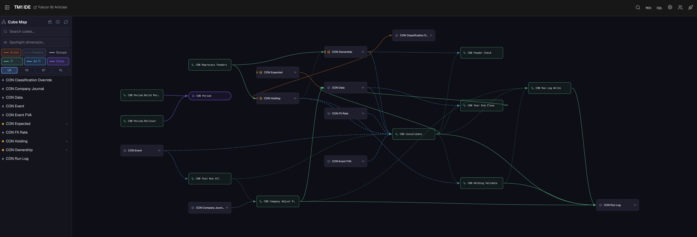
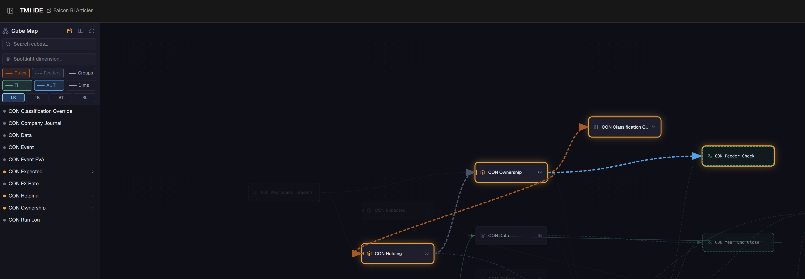

Why a second design
The first design worked. It also needed more elements, more overrides and two corrections to match the textbook.
I built a second design next to it, in the same model, on the same data. I ran both against the same examples. Same answers. Less to maintain.
Short version. One dimension doing four jobs became four dimensions doing one job each.
The first design in one picture
One element per ownership path. The name carries the path.
The group, the company and the route to it are all in one element name. Ownership is read from the name.
The second design: four dimensions
Each question gets its own dimension.
Ownership is no longer in a name. It is calculated by rules from a holdings table: who owns what percentage of whom.
Detailed section. How each of the fifteen consolidation steps is done — cubes, dimensions, layers, order: How each consolidation step is done in TM1 →
Root — whose books
One element per set of group accounts. Plus one for the companies' own books.
| Root | Means |
|---|---|
| Entity Level | each company's own books |
| J1 | J Group accounts (J + B + D) |
| B1 | B sub-group accounts (B + D) — only if needed |
A root exists only for a holding company whose group accounts you want. Usually just the top parent.
Entity — which company
The same company list in every root. The root says which accounts. The entity says which company's part of them.
One company alone need not balance. The whole group must.
Partner — the other side
Any amount with another group company is tagged with that company.
| Company | Account | Partner |
|---|---|---|
| J | Investment | B |
| E | Sales | D |
| D | Cost of sales | E |
Investments are matched to the company owned. Intragroup amounts are found on both sides and removed.
Stage — which adjustment
Every group figure is built in layers. Each journal type is its own layer.
Any number traces to: group → company → adjustment.
Sub-groups
The group is always calculated straight from the companies' books. A sub-group that needs its own accounts gets its own root, calculated the same way.
No double counting can happen. Nothing rolls into anything else. The bridge shows the difference between the two for audit.
How the structure is maintained
A group exists when it is added as a root. Only holding companies whose accounts are needed get one.
Companies come from two registers. One entry each.
Each group works out its own view of an acquisition: when the group gained control, and at what values. Nothing is entered twice.
Status. Planned. Today companies, holdings and groups are set up by hand.
The model as built
Cubes, rules and processes, as drawn by the TM1 IDE's cube map.

Ownership is live. Holdings feed rules; rules give control, interest and classification. The process only reads the result.

How both were tested
26 worked examples with known answers. Each loaded as its own version.
| Source | Covers |
|---|---|
| ACCA exams and articles | vertical groups, mixed groups, step acquisitions, NCI trades, loss of control, associates, foreign subsidiaries, disposals |
| Ng Eng Juan, examples 1–7 | consolidation of consolidation, connecting affiliates, intragroup sales, unrealised profit, dividends |
| Built on the above | year-end close, sub-group variants, three currencies |
Both designs matched the book on every example. One textbook answer did not balance; it was corrected and both matched the correction.
What the first design needed
| Issue | Effect | Fix |
|---|---|---|
| Sub-group goodwill rolled up whole | Goodwill and NCI too high (4.4 in the J Group example) | Added an indirect holding adjustment |
| Classified by effective % | A 45% company reads as an associate; the book treats it as a subsidiary | Classify by control |
| Company owned directly and through a sub-group | Counted twice | Manual "Grouped" override on that path |
The second design needed none of these. Control, effective interest and every route are calculated from the holdings.
Side by side
| First design (paths) | Second design (roots) | |
|---|---|---|
| Group | CC_ element | Root |
| Company in group | Path element | Entity |
| Ownership | Read from the name | Rules on holdings |
| Intragroup | Per level | Partner tags, per group |
| Journals | Per path | Stage |
| New company | Element for every path, every group | One element |
| Extra level of depth | New rule block | Nothing |
| Reads like the book | Yes, step by step | Through the bridge |
Decision
Same answers. Fewer elements. No overrides. No depth limit.
I use the second design. The first design remains a valid way to present a group step by step, and its tree view is still the best picture of a group.
Same platform, either way. Hierarchy-driven tools such as HFM work closer to the first design. SAP Group Reporting works closer to the second. TM1 can do both.
References
Ng, Eng Juan. Consolidated Financial Statements (Singapore). McGraw-Hill Education (Asia), 2nd ed., 2010.
ACCA Student Accountant: Holt, "Business combinations – IFRS 3 (revised)", 2009; Jones, "Complex groups", 2010.
ACCA P2 / SBR exam questions and answers (June 2015, December 2015).
First design: Financial Consolidation Hierarchy Design in TM1, falconbi, 2026.